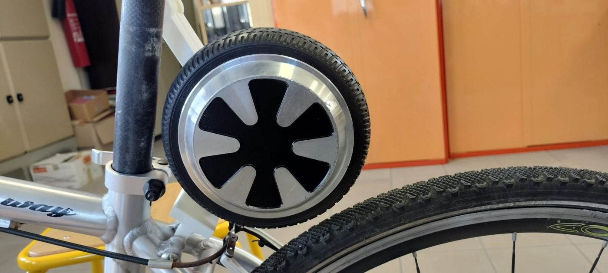
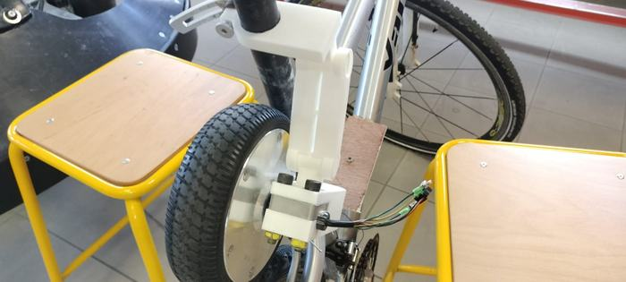
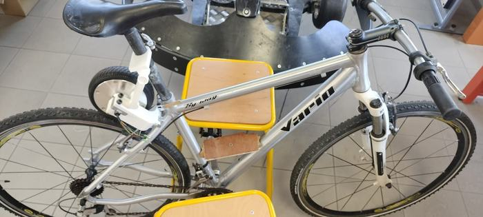

Un VTT converti en Solex
Motoriser un VTT avec une roue d'hoverboard, vitesse limitée à 25 km/h.
Le contexte
Ce projet est celui de ma terminale STI2D. Le sujet était imposé par les professeurs : transformer un VTT en Solex, c'est-à-dire le motoriser avec une roue d'hoverboard.
Nous étions deux dans l'équipe et j'en étais le chef de projet. Cela voulait dire organiser le travail et prendre les décisions. Le désaccouplement du moteur, qui est l'idée centrale du système, était réfléchi dès le début.
Ce que le projet devait faire
- Motoriser un VTT avec une roue d'hoverboard, vitesse limitée à 25 km/h.
- Programmer une accélération progressive et une décélération automatique au-delà de 25 km/h.
- Concevoir une chaîne mécanique désaccouplant le moteur : le VTT redevient un vélo, à peine plus lourd.
25 km/h est la limite légale pour ce type de véhicule. Elle était imposée par les professeurs, au travers du code Arduino qui pilote le moteur.
La chaîne mécanique
Le principe est simple à décrire. Une pièce cylindrique entoure le tube de selle. Elle est liée à une bielle, elle-même liée à une autre bielle. En relevant le cylindre, on soulève le support de la roue : le moteur se détache alors de la roue et le VTT redevient un vélo ordinaire.
Une autre idée avait été envisagée : un moteur facilement amovible. Elle a été abandonnée, parce qu'un moteur de ce type n'est pas pratique à transporter dans un sac à dos.
Le montage en images



Ma part du travail
- Chef de projet : répartir le travail avec mon coéquipier et trancher quand il fallait choisir.
- Modélisation sous SolidWorks : j'ai modélisé toutes les pièces, en trois versions successives.
- Impression 3D : les pièces modélisées ont été imprimées en 3D pour être montées sur le vélo.
- Arduino : je me suis limité à la déclaration des variables du code.
Les difficultés
Le support de la roue. Il est fixé sur deux trous de vis, qui étaient prévus à l'origine pour un garde-boue. Il fallait trouver un bon ajustement : que le support ne casse pas sous l'effort, tout en restant dans la zone d'encombrement autorisée.
La tension électrique. Les professeurs avaient distribué des cartes à programmer en 12 V, mais ils avaient fourni une batterie de 24 V. Racheter du matériel coûtait de l'argent que nous n'avions pas.
Une décision de chef de projet. La décision la plus difficile a été de renoncer au système portable, avec batterie, et de faire fonctionner le VTT uniquement sur le secteur. Nous l'avons simplement branché avec un transformateur.
Le recul
Avant de commencer, je pensais que le code serait la partie la plus difficile. C'est ce qui s'est passé.
Le projet était amusant. Mais le vélo était une épave que nous avons dû réparer, et la plupart du matériel était de mauvaise qualité. Je pense qu'un tel projet devrait être fait avec plus de moyens, ou au moins avec un matériel cohérent entre les éléments.
Ce que j'en retiens : j'ai beaucoup appris sur l'impression 3D et sur la modélisation 3D. C'est ce projet qui m'a donné le goût de la mécanique et du prototypage rapide, et qui m'a poussé à continuer en génie mécanique.